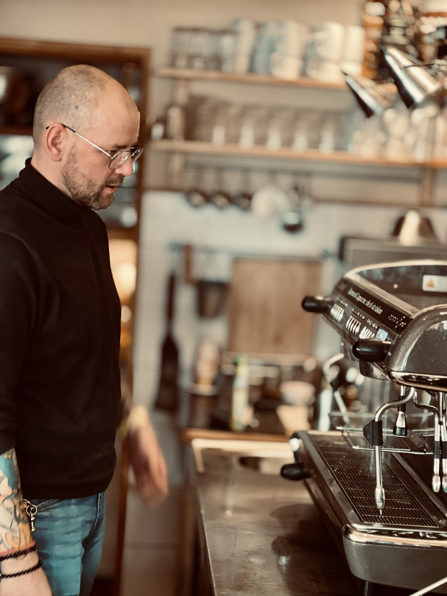

Kocham kawę i chcę, żeby moi klienci poznali smak dobrze zaparzonej kawy.
Naprawiam sprzęt, bo lubię rozwiązywać problemy. Ale równie ważne jest dla mnie to, co dzieje się po zamknięciu obudowy. Temperatura, mielenie, doza, woda, mleko — wszystko ma znaczenie.
Dlatego nie kończę pracy na komunikacie „już działa”. Doradzę, ustawię, pokażę i wytłumaczę. Bez robienia z kawy wiedzy tajemnej.
Obsługuję domowe automaty, profesjonalne maszyny gastronomiczne i młynki. Mały ekspres w kuchni czy kilka grup pracujących cały dzień — jeśli robi kawę, prawdopodobnie możemy porozmawiać.
Mikołaj
EKG Ekspresu